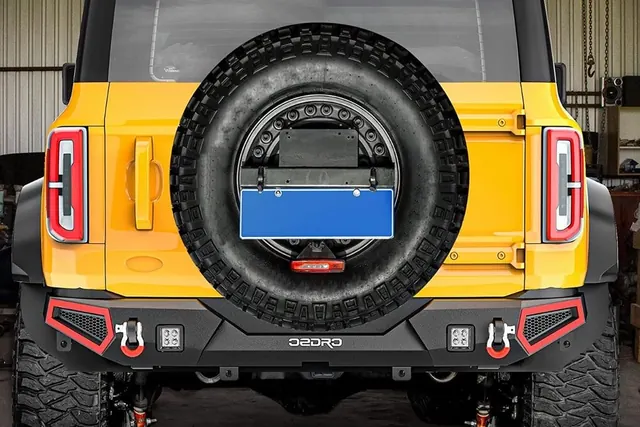

Bumper Installation Planning: Hardware, Wiring, and Safe Handoffs
Prepare an aftermarket bumper installation with the correct manual, hardware inventory, support plan, wiring requirements, and final functional checks.
In this guide
Match the delivered parts to the manual
Compare the order, carton label, product identifier, and supplied instructions. Check whether the manual covers the exact front or rear bumper and the vehicle version being worked on. If a listing groups several styles, ask the seller which instructions apply to the one delivered.
Manufacturer libraries identify the matching guide. WARN's installation literature identifies guides by bumper and part number. A familiar-looking guide for another bumper may use different brackets, sensors, or fasteners. Use it as background only, never as a substitute for the correct installation instructions.
Read the whole matching guide before estimating the work. Identify steps involving factory-part transfer, cutting, drilling, special tools, or access that may be difficult on the actual vehicle. If the instructions are incomplete or contradict the hardware, stop the installation and request clarification.
Inventory hardware before disassembly
Lay the supplied components on a protected surface and compare them with the parts diagram. Keep distinct fastener sizes and bracket positions separated. Photograph any missing or damaged part alongside its package label. Preserve the packaging while support identifies the correct replacement.
Do not substitute a visually similar bolt for a specified fastener. Size, thread, grade, and the hardware arrangement may matter to the joint. Ask the supplier or installer to resolve a shortage before the original bumper comes off.
Mark which original components the instructions require you to retain. A mounting bracket, sensor carrier, light bracket, or clip can be easy to discard with packaging or removed trim. Store reusable factory pieces together so the installer can account for them.
Plan support, access, and the work area
Agree on how the bumper will be supported during removal and installation. Its size and shape can make handling awkward even when its weight is known. Do not rely on the last loose fastener or an unsupported person beneath the part to hold it in position.
Use suitable lifting or support equipment and competent help as the instructions require. If work requires raising the vehicle, follow the vehicle's approved lifting and support procedure. Ford's jack-safety warning prohibits working underneath a vehicle supported only by its jack. Keep bystanders clear of the part's possible movement.
Ask the installer to identify any damaged, corroded, or previously modified mounting area before proceeding. A new bumper does not repair an unsuitable mounting structure. Do not drill or force holes into alignment to compensate for an unexplained mismatch.
Prepare the electrical work and transferred functions
List the sensors, lights, connectors, and plate equipment that must be transferred or connected. Follow the vehicle and accessory instructions for electrical preparation. Avoid a universal battery-disconnection recipe, particularly when the vehicle has systems with their own shutdown or initialization requirements.
Label the original positions of components when the matching instructions call for it. Ask who supplies any required relocation brackets or harnesses and who checks system function afterward. The bumper buying guide explains why sensor openings and included lamps do not settle those questions.
If adding a winch, use both the approved bumper-mounting instructions and the winch's own documentation. WARN's Elite bumper guide, for example, directs installers to use the winch-supplied hardware and torque specification for that winch attachment. That is a reminder to use the correct source for each joint, not a transferable torque value for an OEDRO part.
Agree on what the installer will verify
Before collecting the vehicle, request confirmation that the specified fasteners were tightened using the correct instructions, moving panels have clearance, and wiring is secured away from likely damage. Have the installer demonstrate lights, plate mounting, sensors, and any other affected functions in an appropriate safe setting.
Get the installed part identifier, manual, required follow-up inspection instructions, and details of any unresolved limitation. For the OEDRO rear bumper discussed in the buying guide, preserve its prohibition on using the supplied shackle for towing or recovery.
Keep removed factory parts that may be needed to reverse the change. If a warning, loose component, or unexplained noise remains, have the installer resolve it before treating the job as complete. A bumper that looks aligned in a photograph has not passed the functional checks by appearance alone.